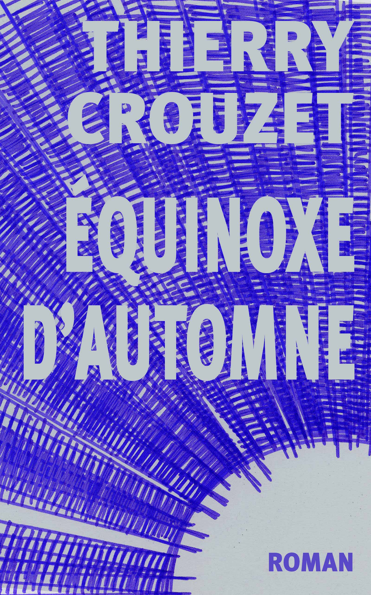
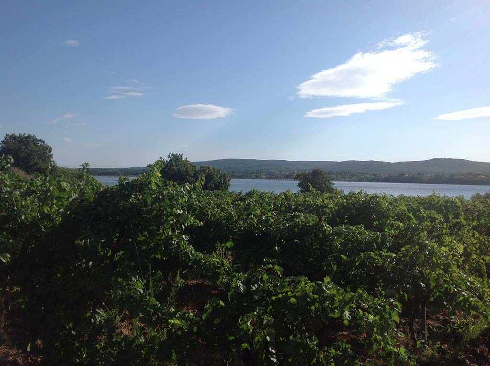

Équinoxe d’automne

Extrait
ebook 2.99 € : Amazon, Apple, Feedbooks, Immateriel, Kobo, Leslibrairies.fr.papier 7.11 € : Amazon, Lulu.
Pendant trois jours, en octobre 1974, Georges Perec s’installa place Saint-Sulpice et nota ce qu’il voyait. Durant des années, j’ai utilisé cette technique pour m’entraîner à écrire. J’ai fini par tenter d’épuiser une journée ordinaire, le 21 septembre 1991, de huit heures du matin à huit heures du soir.
Fiche produit
- Éditeur : autopublication (8 mai 2013)
- Genre : auto-fiction
- ISBN: 978-2-919358-45-8 (ebook)
- ISBN: 978-1-4457-7755-9 (papier)

La vigne
Sommaire | Texte publié lundi 24 mai 2010